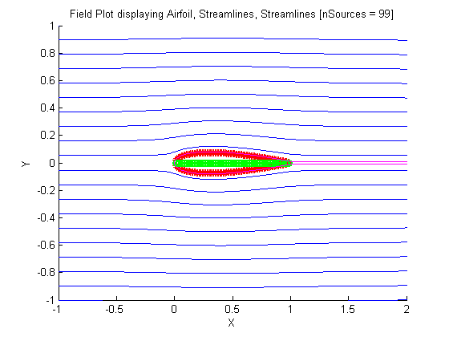
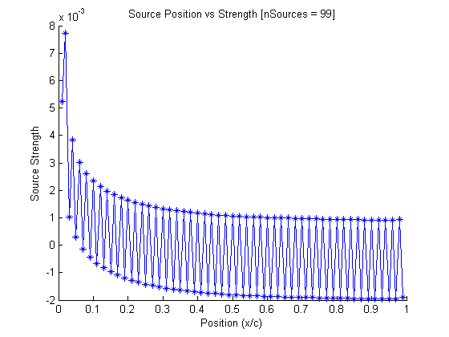
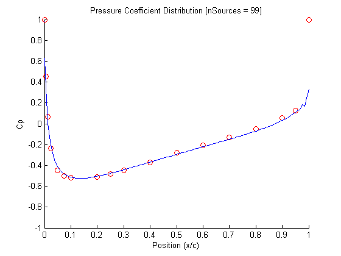
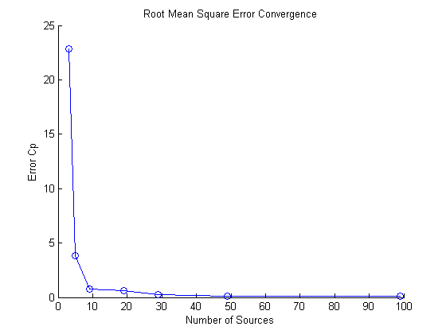

Contents
clear all
close all
clc
Known
xMin = -1;
xMax = 2;
yMin = -1;
yMax = 1;
t = 0.15;
ratioPositionChord = [0 0.005 0.0125 0.025 0.050 0.075 0.10 0.20 0.25 0.30 : 0.1 : 0.90 0.95 1.00]';
coefficientPressureExp = [1.000 0.454 0.067 -0.237 -0.450 -0.498 -0.520 -0.510 -0.484 -0.450 -0.369 -0.279 -0.206 -0.132 -0.049 0.055 0.128 1.000]';
Calculations
nSinks = 99;
xSink = zeros(1, nSinks);
for i = [1 : length(xSink)]
xSink(i) = i / (nSinks + 1);
end
yAirfoil = (t ./ 0.20) .* (0.2969 .* sqrt(xSink) - 0.1260 .* xSink - 0.3516 .* xSink .^ 2 + 0.2843 .* xSink .^ 3 - 0.1015 .* xSink .^ 4);
M = zeros(nSinks, nSinks);
for j = [1 : nSinks]
for i = [1 : nSinks]
M(j, i) = atan2(yAirfoil(j), (xSink(j) - xSink(i)));
end
end
R = -yAirfoil';
s = M\R;
[x, y] = meshgrid(linspace(xMin, xMax, 30), linspace(yMin, yMax, 20));
u = 1;
v = 0;
for i = [1 : nSinks]
u = u + s(i) .* (x - xSink(i)) ./ ((x - xSink(i)) .^ 2 + y .^ 2);
v = v + s(i) .* y ./ ((x - xSink(i)) .^ 2 + y .^ 2);
end
T = 10;
dt = 0.01;
N = (T / dt) + 1;
xy = zeros(N, 2);
figure(1)
hold on
title('Field Plot displaying Airfoil, Streamlines, Streamlines [nSources = 99]')
xlabel('X')
ylabel('Y')
axis([xMin xMax yMin yMax])
for i = [1 : 20]
xy(1, :) = [x(1), y(i)];
for n = [1 : N - 1]
xy(n + 1, :) = p1bEuler(xy(n, :), s, xSink, dt);
end
plot(xy(:, 1), xy(:, 2))
end
plot(xSink, yAirfoil, '*', 'color', [1 0 0])
plot(xSink, -yAirfoil, '*', 'color', [1 0 0])
plot(xSink, 0, 'o', 'color', [0 1 0])
xyAirfoil = zeros(N, 2);
for i = [-0.001, 0.001]
xyAirfoil(1, :) = [0, i];
for n = [1 : N - 1]
xyAirfoil(n + 1, :) = p1bEuler(xyAirfoil(n, :), s, xSink, dt);
end
plot(xyAirfoil(:, 1), xyAirfoil(:, 2), 'color', [1 0 1])
end
velocityFreestream = sqrt(mean(u(:, 1)) .^ 2 + mean(v(:, 1)) .^ 2);
[minEndAirfoil, indexEndAirfoil] = min(abs(xyAirfoil(:, 1) - 1));
uAirfoil = 1;
vAirfoil = 0;
for i = [1 : nSinks]
uAirfoil = uAirfoil + s(i) .* (xyAirfoil(:, 1) - xSink(i)) ./ ((xyAirfoil(:, 1)- xSink(i)) .^ 2 + xyAirfoil(:, 2).^ 2);
vAirfoil = vAirfoil + s(i) .* xyAirfoil(:, 2)./ ((xyAirfoil(:, 1) - xSink(i)) .^ 2 + xyAirfoil(:, 2).^ 2);
end
qAirfoil = sqrt(uAirfoil .^ 2 + vAirfoil .^ 2);
coefficientPressureSim = 1 - (qAirfoil .^ 2) ./ (velocityFreestream .^ 2);
nSinkValues = [3 5 9 19 29 49 99];
errorRMS = zeros(length(nSinkValues), 1);
for n = [1 : length(nSinkValues)]
errorRMS(n) = p1bErrorRMS(nSinkValues(n));
end

Plots
figure(2)
hold on
title('Source Position vs Strength [nSources = 99]')
xlabel('Position (x/c)')
ylabel('Source Strength')
plot(xSink, s, '-*')
figure(3)
hold on
axis([0 1 -1 1])
title('Pressure Coefficient Distribution [nSources = 99]')
xlabel('Position (x/c)')
ylabel('Cp')
plot(ratioPositionChord, coefficientPressureExp, 'o', 'color', [1 0 0])
plot(xyAirfoil(:, 1), coefficientPressureSim)
figure(4)
hold on
title('Root Mean Square Error Convergence')
xlabel('Number of Sources')
ylabel('Error Cp')
loglog(nSinkValues, errorRMS, '-o')
  